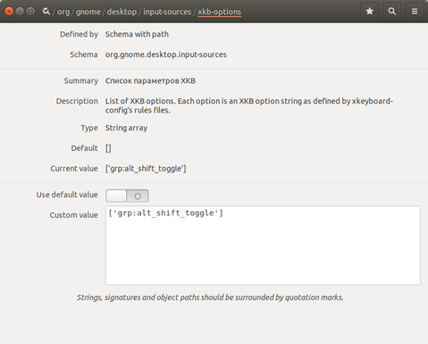

Решение:
1) Установить «Dconf Editor» из Менеджера приложений.
2) Дойти до: /org/gnome/desktop/input-sources/xkb-options
3) Изменить параметр Custom value на: [‘grp:alt_shift_toggle’] (или аналогично, если у вас смена раскладки не по Alt+Shift).
4) Нажать на галочку в правом нижнем углу окна.
